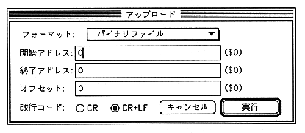
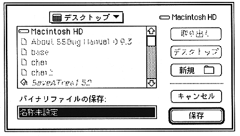

Return to previous page
｜
Return to menu
｜
Go to next page
Upload
Corresponds to the console command W, WB, WM, WS command. All files such as user programs, symbols, macros, batches, etc. can be saved from this menu.
Select “Upload”.
A dialog box for specifying the save target appears.

Specify the format from the
pop-up menu and enter the offset address. The line feed code is valid only when the output is text.
A dialog for entering the file name appears.

Return to previous page
｜
Return to menu
｜
Go to next page